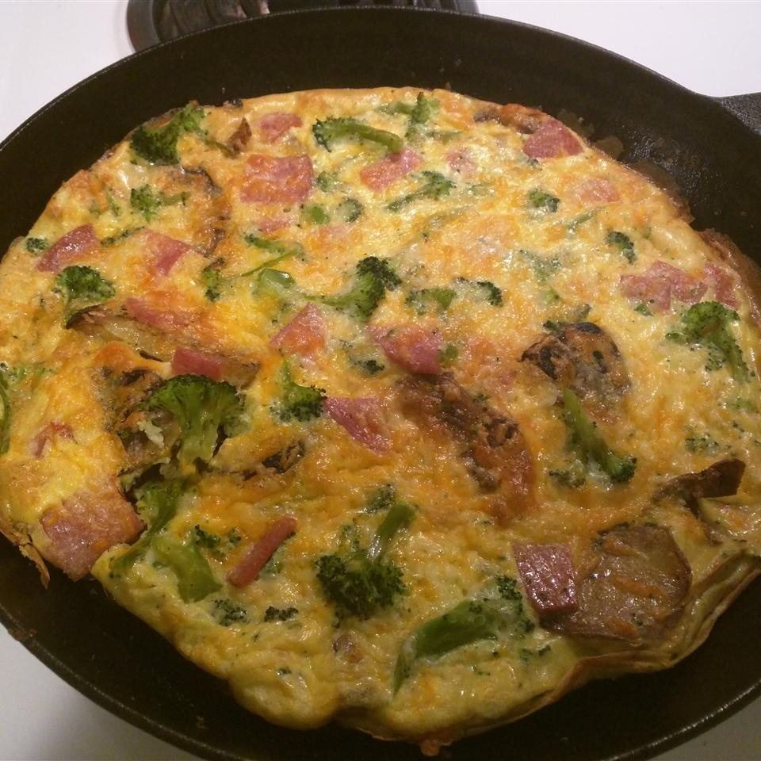

Potato and Egg Omelette(Frittata) Recipe

Description
A potato and 6 eggs are fried in olive oil to make this simple frittata.
Cut it into rectangles or wedges and serve between 2 slices of Italian bread either by itself or with tomato slices. Delicious!
Ingredients
- 2 tablespoons olive oil
- 1 large baking potato, peeled and sliced 1/4 inch thick
- 6 eggs, beaten
- salt and pepper to taste
Steps
- Heat oil in a large skillet or frying pan over medium-high heat.
Spread potato slices across bottom of the pan and cook, turning once,
until golden on both sides. Remove slices from pan and drain.
- When all potato slices have been cooked,
return them to the pan. Turn heat to high.
Pour on the beaten eggs and season with salt and pepper.
Tilt the pan so that the eggs flow to the bottom of the pan.
Turn heat to medium low. Cover pan with a plate and flip pan so that frittata is turned out onto plate.
Slide the frittata back into the pan with the uncooked side down. Cover and let cook another 2 minutes.
- When frittata is finished cooking, remove it from the pan and drain briefly on paper towels before serving.
Back to the main page